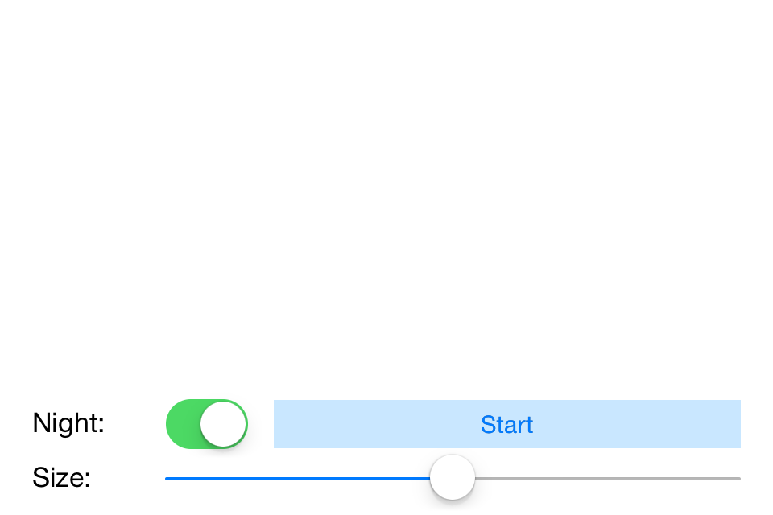
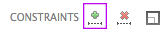
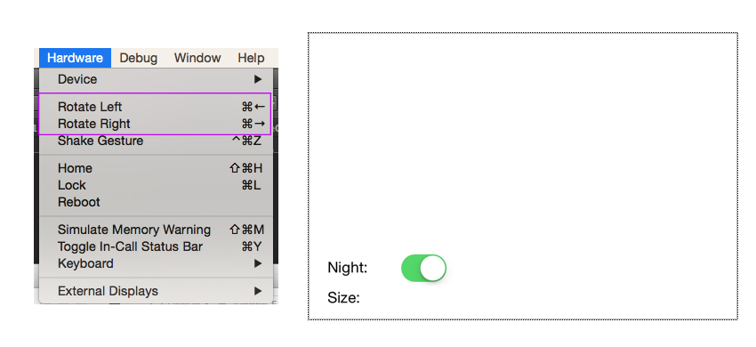
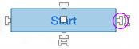
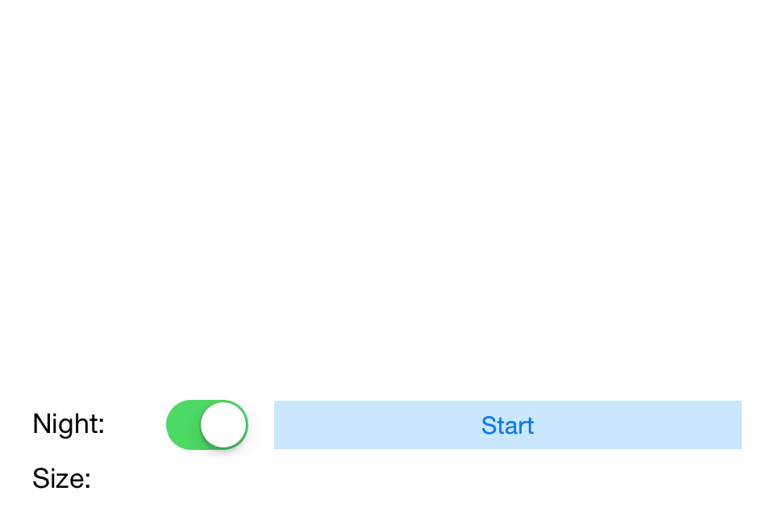

Duration
15 minutes
Goals
During this lab we will update our Fireworks application, using constraints to size and position our views relative to the view controller.
Required assets
This lab is a continuation of the previous exercise. You may use your project from exercise 01 or open the completed project in the Part 01 Resources folder. There is a completed version of the exercise in the Part 02 Resources folder if you'd like to compare your solution when you are finished.
Challenge
Add constraints to the controls added in the previous exercise to allow them to dynamically size and position themselves relative to the parent view controller
- Open completed solution from the previous exercise
- Open Main.storyboard
- Using the toolbar, add recommended constraints to both labels and the switch
- Use the constraint dragging controls to add constraints to the button
- Use the constraint dragging controls to add constraints to the slider
Steps
Below are the step-by-step instructions to implement the exercise.
Apply recommended constraints
For several of the controls, we can use the designer's automatic constraints feature.
- Open Main.storyboard.
- Select the Night label.
- Press the Add recommended constraints toolbar button (green plus). 
- Add recommended constraints to the second label and the switch (do not add constraints yet for the button or the slider).
- Run the application and try rotating the simulator or device to landscape ( Hardware > Rotate Left). 
Add constraints to the button
We want the button to stretch and take up any available space. The recommended constraints button adds fixed value constraints for width and height so we'll add constraints to the button by hand.
- Select the button in the designer.
- Single click to show the constraints dragging controls.
- Use the right-edge constraint dragging bar and add a constraint to the right edge of the view controller. 
- Use the left-edge constraint dragging bar to add a constraint to the left edge of the switch.
- Use the center constraint dragging bar to add a vertical centering constraint to the switch.
- Run the application and try rotating the simulator or device to landscape. 
- Add constraints to the slider
- Use the right-edge constraint dragging bar and add a constraint to the right edge of the view controller.
- Use the left-edge constraint dragging bar to add a constraint to the left edge of the Size label.
- Use the center constraint dragging bar to add a vertical centering constraint to the Size> label.
- Run the application and try rotating the simulator or device to landscape.
This will be very similar to adding constraints to the button.
Summary
In this lab you added constraints to your views to allow them to dynamically size and position themselves on screen.